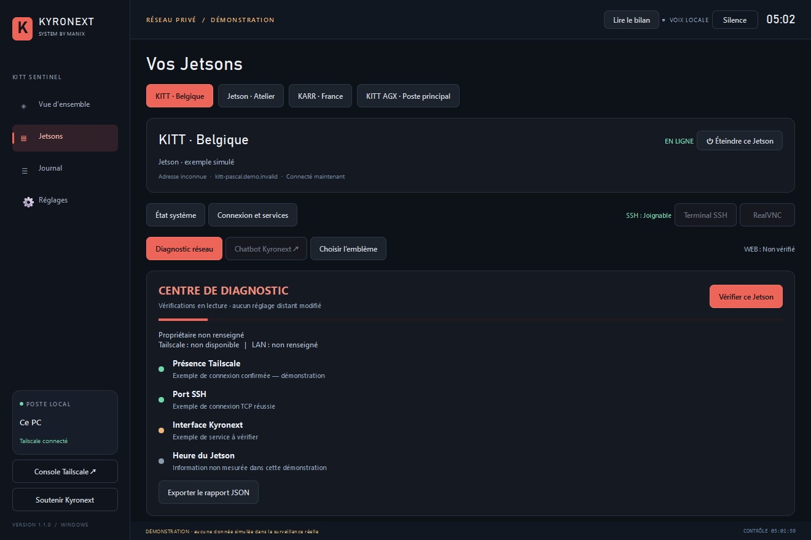

Connecté, accessible, en santé
La présence Tailscale est distincte des ports ouverts et de la santé des services. Une information manquante reste indisponible, jamais inventée.
KITT Sentinel vous aide à suivre vos machines : présence Tailscale, accès SSH et état des services, avec des annonces vocales françaises.

COMPRENDRE AVANT D’AGIR
La présence Tailscale est distincte des ports ouverts et de la santé des services. Une information manquante reste indisponible, jamais inventée.
Vérifiez les ports, l’accès SSH, l’heure et les services configurés. Le diagnostic collecte des informations sans modifier les appareils.
Réglez les seuils de santé, la fréquence de contrôle, les informations des appareils et les annonces vocales. Consultez les événements avec les filtres du journal.
Les températures, la mémoire et les services nécessitent une machine accessible et un accès SSH autorisé. Installer Sentinel ne donne pas automatiquement accès à un Jetson.
PRÊT POUR VOTRE COCKPIT
Cette mise à jour est installée sur l’AGX. Les paquets publics Windows et ARM64 proposés ci-dessous sont encore en version 1.1.2.
Windows 10 / 11 · 64 bits + Ubuntu ARM64 · AGX Orin
Sur Windows, SmartScreen peut signaler que l’installateur n’est pas signé numériquement. Sur Ubuntu ARM64, installez le paquet .deb pour AGX Orin avec le gestionnaire de logiciels ou apt.
La présence Tailscale seule ne fournit pas la température. Il faut aussi un accès SSH fonctionnel et une machine joignable.
Non. Elle peut avoir perdu le réseau, être déconnectée de Tailscale ou appartenir à un autre compte. Sentinel distingue les informations disponibles.
La voix Guy incluse est synthétisée localement. Les anciens profils vocaux sont conservés.
Une adresse locale de secours peut être configurée explicitement. Son accessibilité ne signifie pas que Tailscale est connecté.